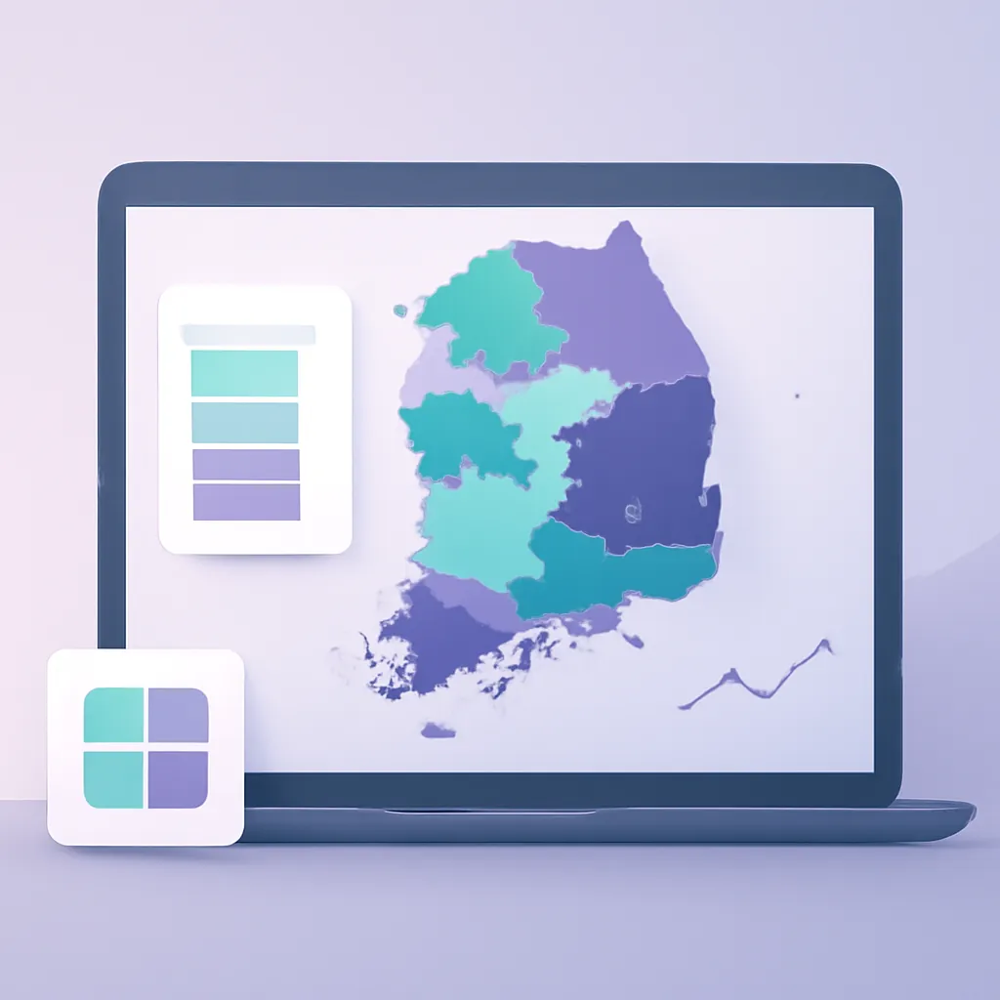

대표 글Featured · 자격증
SQLD와 SQLP, 두 SQL 자격은 무엇이 다른가
SQLD와 SQLP 자격증의 차이점과 응시 자격, 시험 과목, 역할에 대해 상세히 비교해 설명합니다.
기술과 데이터로 공공의 일상을 잇는 기록.Notes on tech and data for the public sector.
SQLD와 SQLP 자격증의 차이점과 응시 자격, 시험 과목, 역할에 대해 상세히 비교해 설명합니다.
핵심 요약 KB캐피탈의 내부 시스템이 해킹 공격을 받아 1800여명의 개인정보가 유출되었다. 유출된 정보에는 이름, 생년월일, 휴대폰번호, 주소, 차량번호 등이 포함되었다. 정보유출 피해자는 일반고객 20명과 협력업체 및 직원 1791명으로 총 181…
개인정보 영향평가는 일정 규모 이상의 개인정보파일을 구축·변경하는 공공기관의 법적 의무다. 대상 기준, 수행 시점, 단계별 절차와 자주 놓치는 지점을 정리했다.
 GIS
GIS
드론과 GIS를 활용한 공간 정보 수집의 장점과 한계, 현실 적용 사례를 살펴봅니다.
 보안
보안
효과적인 보안 정책 수립을 위해 피해야 할 흔한 실수 5가지를 알아보세요. 지켜야 할 핵심은 현실적인 접근입니다.
엑셀과 파이썬을 활용한 데이터 처리 자동화로 업무 효율을 극대화하는 방법을 소개합니다.
 인공지능
인공지능
공공기관에서 AI 기반 고객센터 자동화의 필요성과 도입 전략을 다루며 사례와 기술적 장벽을 분석합니다.

GIS단계구분도를 활용해 대기질을 효과적으로 시각화하는 방법과 주의점을 소개합니다.
보안 사고 대응 계획(IR) 수립의 중요성과 팀 구성, 대응 프로세스, 사후 분석 방법을 알아봅니다.
개인정보 비식별화는 데이터 활용과 보호 균형을 맞추는 중요한 방법으로, 데이터 분석에서 프라이버시를 지키는 핵심입니다.